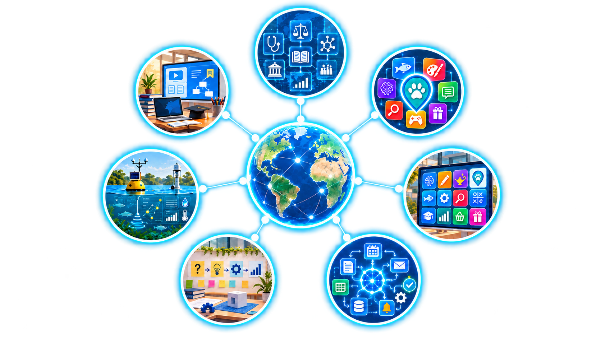

Pescar.IA
Dados, visão computacional e conhecimento local aplicados a ambientes aquáticos e à sustentabilidade.
Acompanhar iniciativa →Universidade • tecnologia • inovação
O ecossistema do unesp.IA Lab reúne a produção científica, as iniciativas e as soluções desenvolvidas pelo laboratório. A pesquisa em Ciência da Computação ocupa papel central, com trabalhos de conclusão de curso (TCC), projetos de iniciação científica (IC) e pesquisas de mestrado e doutorado.
Essa atuação conecta a produção de conhecimento à formação de pessoas e ao desenvolvimento de plataformas, aplicações, metodologias e agentes inteligentes, além das atividades de monitoramento, análise e síntese do Observar.IA.

Uma plataforma, muitas possibilidades
As iniciativas do ecossistema compartilham conteúdos, tecnologias e experiências. O que nasce em uma oficina pode se tornar experimento, aplicativo, metodologia, pesquisa ou serviço para a sociedade.
Arquitetura do ecossistema
As frentes se conectam e compartilham conhecimento, dados, métodos e infraestrutura. Elas representam diferentes portas de entrada, não uma sequência obrigatória.
Um ecossistema integrado
Os eixos formam um ciclo contínuo: cada iniciativa pode começar por uma necessidade diferente e colaborar com todas as outras.
Inovar.IA
Produtos, processos, serviços e metodologias conectam o conhecimento científico às necessidades de empresas, organizações, governos e comunidades.
Dados, visão computacional e conhecimento local aplicados a ambientes aquáticos e à sustentabilidade.
Acompanhar iniciativa →Tecnologia para apoiar o cuidado, organizar informações e fortalecer a relação responsável com animais.
Acompanhar iniciativa →Dados e IA conectados aos desafios e às oportunidades de desenvolvimento da região.
Acompanhar iniciativa →Metodologia APLICAR.IA
Diagnóstico, priorização de oportunidades, implantação, avaliação e evolução orientam a passagem de tarefas manuais para processos e agentes supervisionados.
Observar.IA • Observatório de Inteligência Artificial do unesp.IA
Uma frente transversal para compreender a evolução, a adoção e os impactos da IA, com fontes rastreáveis e revisão humana.
Do monitoramento à evidência: informação integrada para apoiar formação, pesquisa, inovação e decisões.
Carregando conteúdos recentes…
Conteúdo confiável
Os agentes podem monitorar fontes, sugerir pautas, preparar resumos e sinalizar atualizações. A publicação final deve registrar fonte, data, autoria e revisão humana.
Faça parte
Participe dos cursos, acompanhe os projetos e proponha parcerias para pesquisa, extensão e inovação.